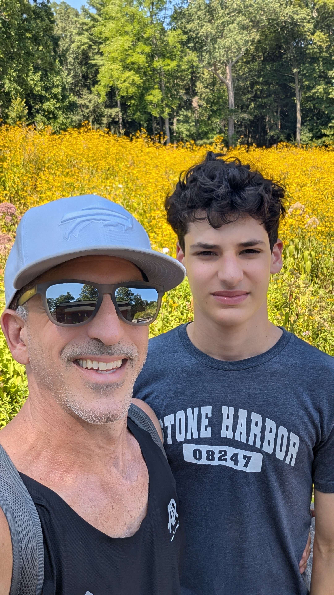
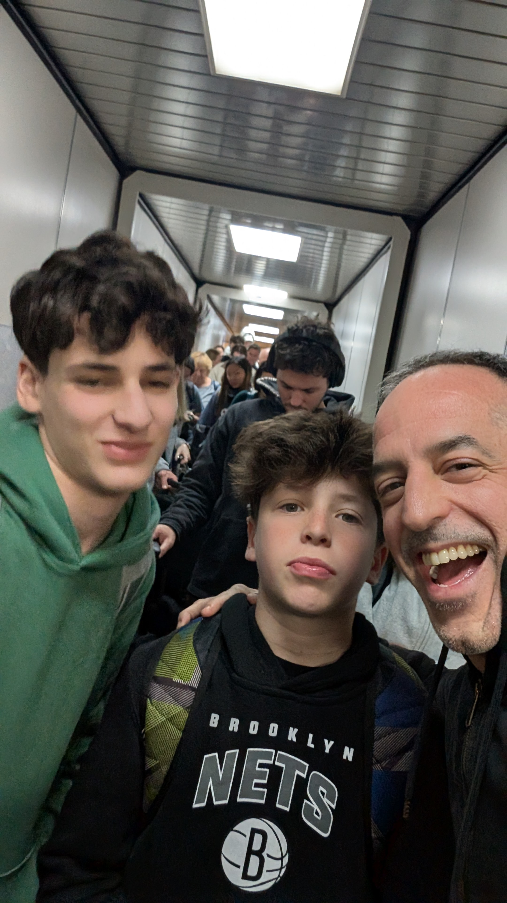
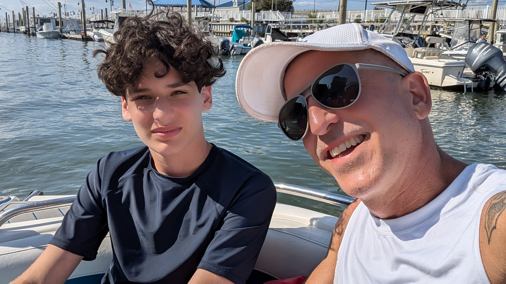
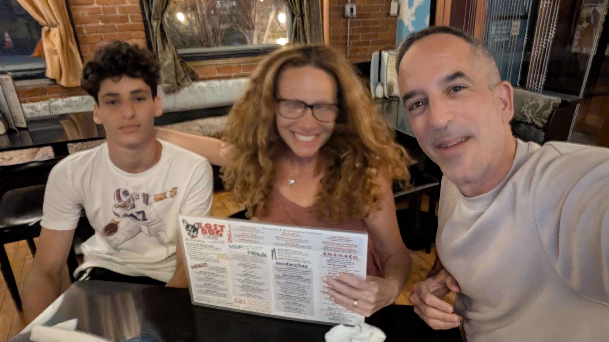

2
years
I've always been able to count on you, whether it's schoolwork or just random advice

1
I don't always say it, but it really does mean a lot to me
2
I appreciate how you’re always there for me and how much you’ve helped me. I’ve learned a lot just from being around you

3
you’ve had an amazing impact on my life, and on who I’ve become
collage


I appreciate everything you've done for me
love you
— Zane